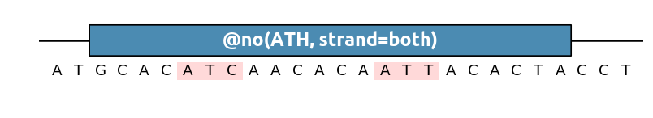
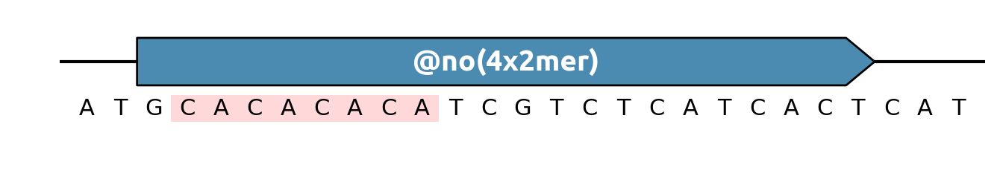
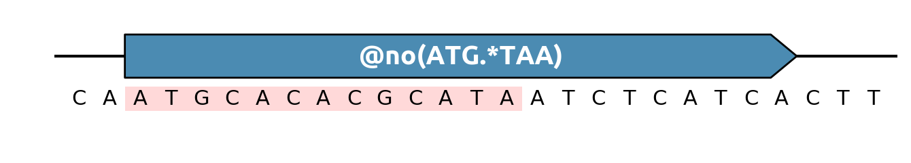
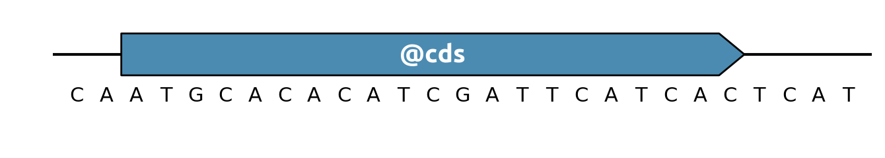
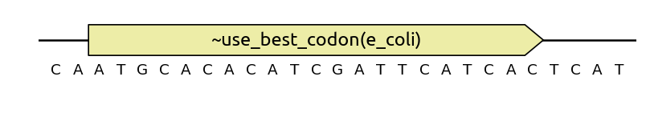
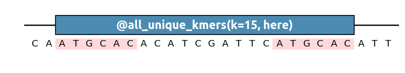

Genbank API¶
This section documents the Genbank API for all builtin specifications of DNA chisel. See also the Genbank usage notes section for tips.
Caution
Use either “=” or “:” in sequence annotation parameters
For historical reasons, DNA Chisel allows to write keyword parameters
with either : or = in genbank annotations, for instance both
@no(ATG, strand:both) and @no(ATG, strand=both) are valid.
While we find = more readable, we have also seen that some tools are
confused by the presence of an = sign in a Genbank label, so using
: may be safer.
Contents
Pattern removal¶
Caution
The annotation’s direction matters!
Since v3.0, the orientation of the annotation of pattern-based
specifications such as no() or insert() indicates where to look for
the pattern. Annotations in the +1 sense indicate that the
pattern should only be looked for in the +1 (5’3’) strand. Patterns in the -1
strand are only looked at in the -1 (3’5’) sense.
Caution
Use strand=both in Genbank files to target both strands.
Standard Genbank does not allow you to create strands without direction
(unlike the Biopython Record format, or the Snapgene format. So keep in
mind that by default, only the feature’s strand is considered. In @no()
and @insert(), you can use strand=both to indicate that the pattern
should be avoided in both strands, for instance @no(BsaI_site, strand=both).
To remove a pattern in a given region, use the @no() label
(alias for @AvoidPattern()). For instance to remove any GC pattern:
This method also supports IUPAC nucleotide mutation for degenerate sequences (NKY etc.) For instance to remove any ATC and ATT (which could be written together as ATH):
It is also possible to provide an enzyme restriction site by suffixing the
enzyme name with _site:
Other pattern shorthands can be used for instance to find sequence repeats (here we look for dimers repeated four times in a row):
When no pattern shorthand cuts it, use a regular expression! The annotation below forbids any TAA sequence following an ATG sequence.
Finally, note that you can also use no() as an objective by prefixing it
with a tilde ~no(), at which case the pattern may not be completely
eliminated, but its number of occurences will be minimized by the algorithm:
Sequence protection¶
To prevent sections of the sequence to be modified, use @keep (alias for
@AvoidChanges):
You can also use keep as an optimization objective, at which case sequence
modifications will not be strictly forbidden, but they will be minimized:

Forcing changes¶
In DNA Chisel, the opposite of specification AvoidChanges is
EnforceChanges (shorthand notation change). For instance, if you want
the solver to change a region as much as possible (for instance, to obfuscate a
sequence), use a ~change annotation:
You can also ask for a certain amount of change, with for instance
~change(40%) which will aim at changing 40% (no more, no less) of the
nucleotides under the annotation. You can also use the specification as a
constraint, for instance @change (the sequence will be totally changed) or
@change(minimum=50%) which will ensures that the final sequence will be 50%
different from the original.
Pattern insertion¶
You can control how many times a pattern should appear in a sequence region
with the @insert() specification (short form of @EnforcePatternOccurence):
By default @insert() ensures that exactly one occurence of the pattern is
present in the given region, but it can also be used to create more occurences:
This specification can be used both to create new patterns in a region that contains too few, or to decrease the pattern occurences i a region that contains too many. Note that with the current algorithm, new occurences of the pattern will be be preferentially placed towards the center of the selected region.
You can also enforce a sequence (or degenerate sequence) at an exact location
with @sequence (short for @EnforceSequence):

To enforce several same-length but quite different sequences, use
@choice (short for @EnforceChoice):
Indicating coding sequences¶
To indicate that a region is a CDS and the protein sequence should be conserved (i.e. only synonymous codon mutations are allowed), use @cds (short for @EnforceTranslation) on a region whose span is a multiple of 3:
Caution
Non-ATG start codons
If the coding region has a start codon in an organisms using non-ATG
start codons (for instance, E. coli sometimes use GTG), make sure to define
a policy for the start codon, for instance start_codon=keep to keep the
sequence of the original start codon, or start_codon=ATG to use ATG as
a start codon. See the documentation of EnforceTranslation for more details
and options.
Codon Optimization¶
Caution
Always use with @cds
If the CodonOptimize specification is used without a @cds constraint covering the same region, then the protein sequence is not guaranteed!
To codon-optimize a gene you can use the ~CodonOptimize() specification but
it is faster and clearer to refer directly to one of the different methods available.
To replace each codon by its most common synonym (which is equivalent to maximizing the CAI index):
To optimize the gene sequence so that the final codon representation matches
the codons frequencies of the target organism, use ~match_codon_usage:
To harmonize codons so that a rare codon in the original host will be replaced
by a rare codon in the target host (and common codons are replaced by common
codons), use ~harmonize_rca:
In the example above (~harmonize_rca(e_coli -> h_sapiens)), the original host is
e_coli and the target host is h_sapiens, separated by an arrow (->).
See HarmonizeRCA for more details.
As you noticed we used species names in these examples. See
the Codon Usage Tables package webpage
for species that can be referred to by name. This includes b_subtilis,
c_elegans, d_melanogaster, e_coli, g_gallus, h_sapiens,
m_musculus, s_cerevisiae. You can also use a TaxID to refer to a species,
e.g. species=1423 at which case the codon frequencies will be downloaded from
the Kazusa codon usage database (assuming it
isn’t down!)
GC content¶
Use @gc to ensure that a given region’s GC content is between a
certain range
For large regions, you can use a windowed evaluation, e.g. with the parameter
window=100 to ensure that the GC content will remain in the desired range
over every 100bp subsegments of the sequence.
The specification can also be used as an optimization objective, at which case it is preferable to provide a target rather than a range:

Removing homologies¶
To ensure that a sequence region has no homologies anywhere else in the sequence
you can use all_unique_kmers:
The annotation above ensures that each 20-mer in the annotated segment does not appear anywhere else in the sequence or in its reverse-complement.
To ensure that a sequence region has no homologies within itself, use the “here” parameter:
You can also avoid matches with a given organism you can also use avoid_matches
.. raw:: html
<img class=’annotation-example’ src=’../_static/images/genbank_annotations/avoid_matches.png’></img>
Caution
Only works if supported by the server
This specification, originally meant to be used via scripts, will only work if the server associates the organism name to a Bowtie index path.
Melting temperature¶
The annotation tm can be used to ensure that a given subsequence has the
desired melting temperature. It can be used either as a constraint or as an
optimization objective:

As a suggestion, you can use this specification with all_unique_kmers to
ensure that the resulting region is primer-friendly:
Specifications not yet supported as Genbank annotations¶
AvoidHeterodimerization
EnforceRegionsCompatibility